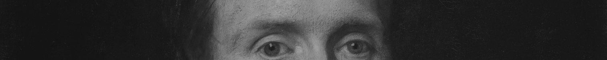
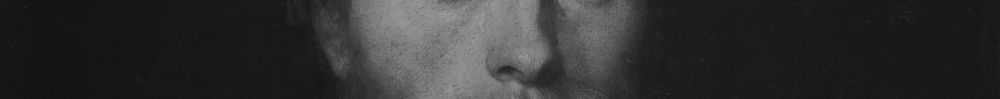
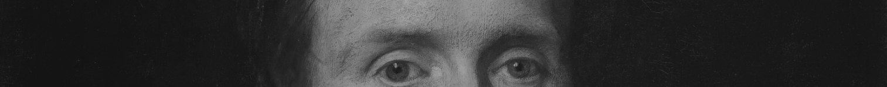
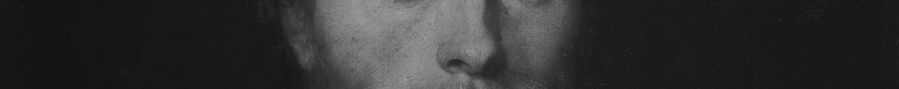

Passion
Creative
Shining

개발 언어와 글씨로 무언가를 창조를 하는 것에 흥미를 느끼고, 시작하게 되었습니다.
해당 포트폴리오는 제가 개발자가 되기 위한 첫 걸음을 나아가는 포트폴리오이며,
저의 배움의 집합체입니다. 미약하지만, 제가 점점 인생에 새기는 발자국을 재밌게 봐주셨으면 감사합니다.
&
web site
first. portfolio
01

02

&ef
javascript
basic&effect
second. portfolio
BASIC
Method
game&mouse
Various games and mouse effects were created using JavaScript,
an object-based script programming language. This course was made
using what I had learned.
&game

&mouse


&game
play game

music

MUSIC

SEARCH

search&slider
Each search function and slide function were implemented and the effects
were based on the basic structure. In this process, I implemented each function
based on knowledge in JavaScript that I learned.
search

slider

quiz¶llax
QUESTION
MOVE
I'd like to show you the results of creating a quiz effect and a parallax effect that
brings the atmosphere to life on the website. I was able to share the code for the process
of creating the effect and show the results I have learned and produce them.
 





Front.end
React&Vue
I think the front end is the beginning of the developer. Although it is weak,
I would like to show you the portfolio of websites that I have collected and organized various data by applying
API to the react and vue I have learned, and I would like to announce the beginning of my development.